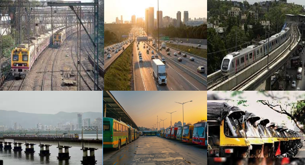

Buy Your Dream Home in Dwarkadhish: Where Connectivity Meets Convenience.
Rail Connectivity
Naigaon benefits from strong rail connectivity through the Naigaon Railway Station, which is part of the Western Line of the Mumbai Suburban Railway network. This station is situated on the Vasai Road-Virar section, an important suburban route connecting the northern parts of Mumbai and Maharashtra with the city. As a result, residents and commuters in Naigaon can easily travel to major hubs like Borivali, Andheri, and even further into Mumbai Central. The well-established railway network ensures frequent and efficient travel options, making Naigaon a preferred choice for those commuting into Mumbai for work or leisure.
Road Connectivity
Naigaon enjoys excellent road connectivity, particularly through National Highway 48 (NH-48), which is one of the primary highways running from Delhi to Mumbai. This highway provides direct access to Mumbai and its neighboring areas, facilitating smooth road transportation for both locals and travelers. Additionally, Naigaon is connected to several state highways and local roads that link it to key towns and suburban areas. The road network in and around Naigaon supports the smooth flow of traffic and transportation, which is critical for both daily commuters and businesses operating in the region.
Proximity to Mumbai Metropolitan Region (MMR)
As part of the Mumbai Metropolitan Region (MMR), Naigaon is integrated into the larger urban development of Mumbai and its satellite towns. The MMR region includes both highly urbanized areas as well as developing regions like Naigaon, which benefit from the infrastructural advancements in the metropolitan area. The growth of new expressways, flyovers, and improved road networks across the MMR has made Naigaon more accessible to major commercial and residential areas within Mumbai. This proximity to Mumbai enhances Naigaon’s position as an attractive destination for both real estate development and business growth.
Mumbai Suburban Railway Network (Western Line)
Naigaon’s location on the Western Line of Mumbai’s suburban railway network provides a vital link to the city and its surrounding areas. The Western Line is one of the busiest and most critical lines for commuters traveling within Mumbai and its suburbs. Naigaon’s station is well-connected to key parts of the city, allowing easy access to bustling commercial centers, transport hubs, and leisure destinations across the western suburbs of Mumbai. This extensive railway network is a lifeline for the people of Naigaon, offering regular, affordable, and efficient transport options to Mumbai and other neighboring regions.
Upcoming Developments
With ongoing infrastructure developments, Naigaon is set to benefit from improved connectivity in the coming years. One of the most promising additions is the Mumbai Metro, with plans to extend the metro network to further integrate Naigaon with the rest of Mumbai. The development of metro lines will provide an even faster and more efficient mode of transport, reducing travel time and easing congestion on existing routes. Additionally, the expansion of the metro system is likely to increase the attractiveness of Naigaon as a residential and commercial hub, further enhancing its connectivity to key urban areas.
Public Transport
In addition to rail and road links, Naigaon has a well-established public transport network, which includes buses and auto-rickshaws that offer localized mobility within the area. Public buses run by the Maharashtra State Road Transport Corporation (MSRTC) and other private operators provide regular services to and from Naigaon, making it easier for residents to travel to nearby towns and suburban locations. The availability of auto-rickshaws further enhances the convenience of getting around locally. As the region grows, more bus depots and transport services are likely to be introduced, making public transport in Naigaon even more efficient and accessible for residents and visitors alike.
Conclusion
In conclusion, Naigaon is well-linked to major transport routes, which include an extensive railway system, proximity to major highways, and ongoing developments in public transportation. These factors combine to make Naigaon an easily accessible and strategically located area within the Mumbai Metropolitan Region, offering both convenience and potential for further growth.
Contact us
+91 72088 43484 / +91 72088 43487
kkcreateandbiuld@gmail.com
Radha Nilaya, Plot No. 164/2,
Bapane Village, Chandrapada Road,
Naigaon (E) - 401208,
Maharashtra, India.